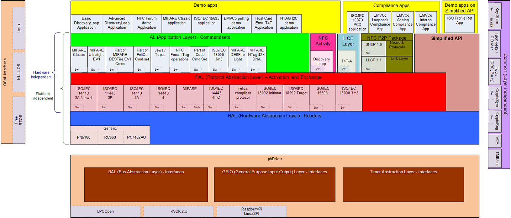

- Generated by
 1.8.12
1.8.12
|
NXP NFC Reader Library
v05.22.00
|
This document describes the NXP NFC Reader Library Version that supports the Reader Frontend ICs namely PN5180, CLRC663 and Reader NFC Controller PN7462AU. The source code is intended to run on NXP LPC1769 connected to PN5180/CRLRC663, FRDM-K82 Board connected to PN5180/RC663, RasperryPi Board connected to PN5180/RC663 and on the PN7462AU CortexM0 based uC.
The NXP reader library is encapsulated into Layers and Components written in ANSI C. The library structure provides a modular way of programming and setting up the reader interface. The reader library consists of below layers
Each Layer consists of different components having a generic interface and a specific implementation. Find more information on the usage of the reader library in the related Application Notes [13],[8]

|
Contains Simplified APIs for access to NxpNfcRdLib functionality.
The Network Protocol Layer implements the Simple NDEF Exchange Protocol(SNEP) component.
The NFC Link Layer implements the Logical Link Control Protocol component.
The Card Emulation Layer implements the commands for emulated card components.
The NFC Activity Layer implements the Discovery loop component.
The Application Layer implements the commands of contactless smart cards.
MIFARE Classic contactless IC
Commandset as described in [1]
Type 1 tag
Commandset as described in [4]
MIFARE(R) Ultralight
Commandset as described in [3]
FeliCa
Part of Felica Open commandset. Read, Write, Request Response, Request Service, REQC, ATQC are implemented according to [5]. Please be aware that the command 'Read' is described within NFC Forum Type 3 Tag Operation as 'Check' command and 'Write' as 'Update' command. REQC and ATQC are part of the polling sequence described in [14].
MIFARE DESFire
Commandset as described in [8]
MIFARE DESFire Light
Commandset as per MIFARE DESFire Light Data sheet
NTAG 42x DNA / TT
Commandset as per NTAG 42x DNA / TT Data sheet
ICode
ISO/IEC 15693 Command set and custom commands of ICode SLI tag as described in [13], [17]
ISO/IEC 18000-3 Mode3
ICODE ILT Commandset as described in [11]
The Protocol Abstraction Layer implements the activation and exchange within the protocol of the contactless communication.
ISO/IEC 14443-3A, as described in [4]
ISO/IEC 14443-3B, as described in [4]
ISO/IEC 14443-4A, as described in [4]
ISO/IEC 14443-4, as described in [4]
MIFARE product needs to be included for any MIFARE product card.
ISO/IEC 14443-4mC, as described in [4]
FeliCa compliant protocol, as described in [5],
parts of it are also part of ISO 18092, see [6]
ISO/IEC 15693 / ISO/IEC 18000-3M1, protocol as described in [13]
ISO/IEC 18000-3 Mode3, as described in [12]
ISO/IEC 18092 Mode Initiator, the DEP protocol as well as the
passive/active communication mode, described in [6]
Hardware Abstraction Layer
The Hardware Abstraction Layer implements the Hardware specific elements of the reader.
component : Rc663
Reader Specifics for the RC663. Find more information on this product in [2]
KeyStore
Storage of the keys, like MIFARE product keys.
CryptoSym
Used for Symmetric Cryptography operations.
CryptoRng
Used to generate random numbers for CryptoSym.
Virtual Card Architecture (R)
Virtual Card Architecture.
TMI Utilities
Used to for Transaction MAC Identifier functionality.
Cid Manager
The CID manager manages the CID of all cards.
Tools
Some tools are attached to calculate the CRC or Parity.
Error Code Collection
A collection of error codes known.
Platform Definitions
Definitions for specific platform.
[1] Data sheet - MF1S50yyyX MIFARE Classic 1K - Mainstream contactless smart card IC for fast and easy solution development, available on NXP web
[2] Data sheet - CLRC663; Contactless reader IC, BU-ID Doc. No. 171110, available on NXP Web
[3] Datasheet - MIFARE Ultralight; MF0ICU1, MIFARE Ultralight contactless single-ticket IC, BU-ID Doc. No. 028638, available on NXP Web
[4] ISO/IEC Standard - ISO/IEC14443 Identification cards - Contactless integrated circuit cards - Proximity cards
[5] JIS Standard - JIS X 6319 Specification of implementation for integrated circuit(s) cards - Part 4: High Speed proximity cards
[6] ISO/IEC Standard - ISO 18092 Information technology - Telecommunications and information exchange between systems - Near Field Communication- Interface and Protocol (NFCIP-1)
[7] Application Note - AN11021 CLRC663 Software Design Guide for NXPRdLib, available on NXP Web
[8] Data Sheet MIFARE DESFire; MF3ICDx21_41_81, MIFARE DESFire EV1 contactless multi-application IC, BU-ID Doc. No. 134036, available on NXP docu control
[9] Data Sheet MIFARE Plus; MF1PLUSx0y1, Mainstream contactless smart card IC for fast and easy solution development, BU-ID Doc. No. 163734, available at NXP docu control
[10] Data Sheet MIFARE Ultralight C; MF0ICU2, BU-ID Doc. No. 171432, available on NXP Web
[11] Data Sheet ICODE ILT , smart label IC; will be available on NXP Web
[12] Data Sheet ISO/IEC Standard - ISO 18000-3 Information technology AIDC techniques - RFID for item management - Air interface, Part 3 - Parameters for air interface communications at 13.56 Mhz, M1 stands for Mode 1, M3 stands for Mode 3
[13] ISO/IEC Standard - ISO/IEC15693 Identification cards - Contactless integrated circuit(s) cards - Vicinity cards
[14] NFC Forum Standard - NFC Forum Type 1,2,3,4 Tag Operation Specification
[15] NFC Forum Standard - Activity Specification
[16] NFC Forum Standard - Digital Protocol Specification
[17] Data Sheet ICODE DNA; SL2S6002, ICode DNA HF tag IC for brand protection tagging applications, BU-ID Doc. No. 348630, available at NXP docu control
YOU AGREE THAT NXP HAS MADE NO EXPRESS WARRANTIES TO YOU REGARDING THE SOFTWARE AND THAT THE SOFTWARE IS BEING PROVIDED TO YOU "AS IS" WITHOUT WARRANTY OF ANY KIND. NXP DISCLAIMS ALL WARRANTIES WITH REGARD TO THE SOFTWARE, EXPRESS OR IMPLIED, INCLUDING, WITHOUT LIMITATION, ANY IMPLIED WARRANTIES OF FITNESS FOR A PARTICULAR PURPOSE, MERCHANTABILITY, MERCHANTABLE QUALITY OR NONINFRINGEMENT OF THIRD PARTY RIGHTS. Some states or jurisdictions do not allow the exclusion of implied warranties so the above limitations or parts of it may not apply to you.
IN NO EVENT WILL NXP BE LIABLE TO YOU FOR ANY LOSS OF USE, INTERRUPTION OF BUSINESS, OR ANY DIRECT, INDIRECT, SPECIAL, INCIDENTAL, OR CONSEQUENTIAL DAMAGES OF ANY KIND (INCLUDING LOST PROFITS) REGARDLESS OF THE FORM OF ACTION WHETHER IN CONTRACT, TORT (INCLUDING NEGLIGENCE), STRICT PRODUCT LIABILITY OR OTHERWISE, EVEN IF ENDUSER HAS BEEN ADVISED OF THE POSSIBILITY OF SUCH DAMAGES. Some states or jurisdictions do not allow the exclusion or limitation of incidental or consequential damages, so the above limitation, exclusion or parts of it may not apply to you.
| Release | Date | Notes |
|---|---|---|
| 05.22.00 | June 2019 | NxpNfcRdLib_05.22.00_20190607 |
| - NTag 42X DNA AL is part of NxpNfcRdLib Public and NDA Release. | ||
| - PN5180 HAL is updated for Sony FeliCa EMD Handling feature supported with PN5180 FW V04.01. | ||
| - BAL Exchange sequence in PN5180 HAL is updated on similar lines as per recommendation when | ||
| Test Bus is enabled. | ||
| 05.21.00 | December 2018 | NxpNfcRdLib_05.21.00_20181219 |
| - Crypto LRP code is been removed from package and the MIFARE DESFire Light AL dependency on LRP Crypto | ||
| is been removed and shall only work in MIFARE DESFire EV2 mode. | ||
| 05.20.00 | December 2018 | NxpNfcRdLib_05.20.00_20181207 |
| - NxpNfcRdLib Reader Library is been updated for below NFC Forum Technical Specification. | ||
| - DTA Application is been updated as per CR11 and the NXP NFC Reader Library is compliant to | ||
| CR11 certification (Internal certification run). | ||
| - NFC CCID Example is been updated to handled CCID 'Icc Power On' and 'Icc Power Off' commands even | ||
| even though automatic device activation is supported. | ||
| - Updated the return value of NFC LIB to be more meaningful. | ||
| - MIFARE DESFire Light AL is part of NxpNfcRdLib Public and NDA Release. | ||
| - ISO10373 PICC Compliance application is been updated to support latest Test suite v3.1.2 from MicroPross. | ||
| - ISO10373 PCD Compliance application is been updated to support latest Test suite v2.0.2 from MicroPross. | ||
| 05.19.00 | August 2018 | NxpNfcRdLib_05.19.00_20180810 |
| - NxpNfcRdLib Reader PAL components are been updated as per NFC Forum Digital Specification v1.1. | ||
| - NXP NFC Reader Library is been updated as per EMVCo Digital Specification v3.0. | ||
| - Handling of higher FSD and FSC values as per EMVCo Digital Specification v3.0 in PAL 14443-4. | ||
| - PPS command can now be used in EMVCo Mode. | ||
| 05.18.00 | July 2018 | NxpNfcRdLib_05.18.00_20180723 |
| - FWT calculation in PAL 14443-4a component exceeds EMVCo specification value. | ||
| - FWT calculation in PAL 14443-3b component exceeds EMVCo specification value. | ||
| - Don't use forbidden MIFARE terms in source code. | ||
| - Fix the test cases which are unstable in PAL Felica test suite of Reader Test Bench. | ||
| 05.17.00 | June 2018 | NxpNfcRdLib_05.17.00_20180625 |
| - NxpNfcRdLib update to support higher FSDI and FSCI Values as per EMVCo v3.0. | ||
| - NxpNfcRdLib update to support PPS command as per EMVCo v3.0. | ||
| 05.16.00 | April 2018 | NxpNfcRdLib_05.16.00_20180426 |
| - Reverted usage of GPIO2 to GPIO7 in HIF example as per v5.14 release. | ||
| 05.15.00 | April 2018 | NxpNfcRdLib_05.15.00_20180413 |
| - TypeA asyn-baudrate issue with RC663Plus is been resolved. | ||
| - Support for new PNEV7462C board. | ||
| 05.14.00 | March 2018 | NxpNfcRdLib_05.14.00_20180305 |
| - Resolved all the HAL RC663 recursive function calls. | ||
| - Removed dead code in PAL 18000p3m3. | ||
| - Update HAL RC663 with new Command API to support PRBS. | ||
| - Bug fix in TOP T2T Read NDEF message > 1Kbytes. | ||
| - Update in PAL 14443-4mC parsing logic to check FCS for FSCT4AT,MIN. | ||
| 05.13.02 | February 2018 | NxpNfcRdLib_05.13.02_20180226 |
| - Update to use correct product derivative ID of CLRC661. | ||
| 05.13.01 | February 2018 | NxpNfcRdLib_05.13.01_20180215 |
| - Support of CLRC661 Product derivative in HAL RC663 of NxpNfcRdLib. | ||
| 05.13.00 | February 2018 | NxpNfcRdLib_05.13.00_20180206 |
| - HAL RC663 is optimized for T1T exchange operations. | ||
| - HAL PN5180 and RC663 is updated to return correct status in case of Parity/CRC error while performing T1T exchange. | ||
| - Bug fix in ActivateCard() API of PAL 14443-3A to retry Select in case of Time out. | ||
| - Bug fix in RATS API of PAL 14443-4A to parse Deselect response correctly. | ||
| 05.12.00 | December 2017 | NxpNfcRdLib_05.12.00_20171215 |
| - Allow configuration of Q and I value of 0x00h and 0x3Fh from LPCD Calibration cycle in HAL RC663. | ||
| - Provide Guard Timer callback in HAL DataParams of PN5180. | ||
| 05.11.00 | November 2017 | NxpNfcRdLib_05.11.00_20171127 |
| - New Compliance Example to test EMVCo 2.6b Interoperability as per bulletin No 195. | ||
| - MISRA Compliance Fixes. | ||
| - Fix in RC663 HAL to not turn ON RF Field when Apply Protocol Settings of 18000p3m3. | ||
| - HAL PN7462AU SetConfig support for Tx configuration of 1 out of 4 encoding of ISO15693. | ||
| - DAL update in LPC1769 to configured supported SPI Baud rate. | ||
| 05.10.00 | October 2017 | NxpNfcRdLib_05.10.00_20171023 |
| - Discovery Loop is updated to support detect/activate of multiple T2T cards. | ||
| - Compliance Applications are updated to use common phApp_Init.c and phApp_Init.h files. | ||
| - PN5180 Initialization is updated to check FW version rather than reading if TestBus | ||
| is enabled or not while determining if TestBus is enabled or not. | ||
| - 18000p3m3ResumeInventory logic in DUT HAL is updated to send correct RxData and length. | ||
| - PAL 18092mT Receive API is updated to call phDriver_TimerStop() API correctly based on | ||
| Rx State and also PN7462AU DAL is updated handle Timer Stop when Start is not called before. | ||
| - DAL of LPC1769 and K82 is updated to provide HW Timer priority configuration as defined | ||
| in the corresponding board header file. | ||
| 05.09.00 | September 2017 | NxpNfcRdLib_05.09.00_20170925 |
| - ICODE DNA Tag Detection and Activation Should be added in NfcrdlibEx5_ISO15693. | ||
| - phceT4T - Writing the NDEF message (minus 2 bytes of Length) of exact size as NDEF file fails. | ||
| 05.08.00 | September 2017 | NxpNfcRdLib_05.08.00_20170907 |
| - Optimize RC663 HAL for WUPA and WUPB transaction time. | ||
| 05.07.00 | August 2017 | NxpNfcRdLib_05.07.00_20170824 |
| - MISRA Compliance Fixes. | ||
| - HAL PN5180 18000p3m3Inventory API is been updated to clear all interrupts. | ||
| 05.06.00 | August 2017 | NxpNfcRdLib_05.06.00_20170811 |
| - MISRA Compliance Fixes. | ||
| 05.05.00 | August 2017 | NxpNfcRdLib_05.05.00_20170804 |
| - Optimization of Poll Guard time with Pn5180 to improve EMVCo | ||
| Poll guard time performance. | ||
| 05.04.00 | July 2017 | NxpNfcRdLib_05.04.00_20170704 |
| Fixed: | ||
| - HAL Pn5180 reports error in case communication with FW is not reliable. | ||
| - Optimized EMVCo transaction time for customer timing requirements. | ||
| 05.03.00 | May 2017 | NxpNfcRdLib_05.03.00_20170529 |
| - PAL 15693 is updated to configuration FDT based on ASK configuration of HAL. | ||
| - Issues is HAL Pn5180. | ||
| 05.02.00 | April 2017 | NxpNfcRdLib_05.02.00_20170428 |
| - Bug fixes in TOP-T5T. | ||
| 05.01.00 | April 2017 | NxpNfcRdLib_05.01.00_20170414 |
| - SPI NSS Handling moved to HAL | ||
| - AL ISO15693 / AL-SLI / AL-ICode DNA merged into single component AL-ICode | ||
| - Fix Pn5180 HAL to handle PHHAL_HW_CONFIG_POLL_GUARD_TIME_US==0 | ||
| - PR Fixes in AL-TOP-T5T | ||
| - Updates for Plutus integration/development | ||
| - 18000P3M3 updates in HAL 5180 / 7462AU | ||
| 05.00.00 | March 2017 | NxpNfcRdLib_05.00.00_DAL_20170323 |
| Initial internal tag with DAL(phDriver) and phOsal | ||
| 04.06.00 | Feb 2017 | Rc663 LPCD updates |
| 4.050.03.011702 | Jan 2017 | Fix for [artf220074] and [artf222751] for R Gate release |
| 4.050.03.001651 | Dec 2016 | Internal NXP Feedback |
| 4.050.02.001650 | Dec 2016 | RC663Plus Support |
| 4.040.05.011646 | Nov 2016 | Patch Updates on top of 4.040.05.001642 |
| Linux Porting updates for phOsal_ThreadDelay and | ||
| Enable On-Board Pull Up by SW for IRQ pin used for RC523 | ||
| 4.040.05.001642 | Oct 2016 | Linux Support, Freedom platform support, Simplified Layer |
| 4.022.00.001626 (PRC-M6) | June 2016 | Pre Release Check, with OSAL+Platform Restructuring |
| See phOsal | ||
| 4.010.04.001617 | April 2016 | Incremental code drop Week 17, 2016 |
| 4.010.03.001609 | Mar 2016 | Incremental code drop Week 9, 2016 |
| 4.010.02.001606 | Feb 2016 | Incremental code drop Week 6, 2016 |
| 4.010.01.021604 | Jan 2016 | Incremental code drop Week 4, 2016 |
| 4.010.01.001604 | Jan 2016 | Incremental code drop Week 9, 2016 |
| 4.010.01.001603 | Jan 2016 | Incremental code drop Week 3, 2016 |
| 4.010.00.001602 | Jan 2016 | R Gate Release for Week 02, 2016 |
| 4.010.00.001551 | Dec 2015 | V Gate Release for Week 51, 2015 |
| 3.092.12.001546 | Nov 2015 | Incremental code drop Week 47, 2015 |
| 3.092.11.001546 | Nov 2015 | Incremental code drop Week 46, 2015 |
| 3.092.10.001539 | Sept 2015 | Incremental code drop Week 39, 2015 |
| 3.092.09.001539 | Sept 2015 | Incremental code drop Week 39, 2015 |
| 3.092.08.001537 | Sept 2015 | Incremental code drop Week 37, 2015 |
| 3.092.07.001537 | Sept 2015 | Incremental code drop Week 37, 2015 |
| 3.092.06.011536 | August 2015 | Incremental code drop Week 36, 2015 |
| 3.092.06.001535 | August 2015 | Incremental code drop Week 35, 2015 |
| 3.092.05.001534 | August 2015 | Incremental code drop Week 34, 2015 |
| 3.092.04.001533 | August 2015 | Incremental code drop Week 33, 2015 |
| 3.092.03.001532 | August 2015 | Incremental code drop Week 32, 2015 |
| 3.092.02.001531 | July 2015 | Incremental code drop Week 31, 2015 |
| 3.092.01.001530 | July 2015 | Incremental code drop Week 30, 2015 |
| 3.092.00.001529 | July 2015 | A Gate Release for Week 29, 2015 |
| 3.082.06.001528 | July 2015 | Incremental code drop Week 28, 2015 |
| 3.082.05.001526 | June 2015 | Incremental code drop Week 26, 2015 |
| 3.082.04.001524 | June 2015 | Incremental code drop Week 24, 2015 |
| 3.082.03.001522 | May 2015 | Incremental code drop Week 22, 2015 |
| 3.082.02.001520 | May 2015 | Incremental code drop Week 20, 2015 |
| 3.082.01.001518 | April 2015 | Incremental code drop Week 18, 2015 |
| 3.082.00.001516 | April 2015 | A1 Gate Release for Week 16, 2015 |
| 3.072.00.011514 | April 2015 | Internal Release with T4T Card Emulation implementation |
| 3.072.00.001512 | March 2015 | Internal Release with LLCP 1.1 and SNEP 1.0 implementation |
| 3.062.00.021509 | February 2015 | Internal Release for Discovery Loop for Error Code Changes |
| 3.062.00.001506 | February 2015 | Internal Release for Discovery Loop and 14443-4 Card Mode Release |
| 3.052.00.001451 | December 2014 | Internal Release for 18092 Target Mode Release |
| 3.042.00.001443 | November 2014 | Internal Release for ISO15693 Extended Commands and ICODE SLIX2 new commands |
| 3.032.00.001441 | October 2014 | Internal release with HAL and PAL Changes |
| 3.020.00.001432 | August 2014 | Beta Release for Card Emulation for PN512 |
| 3.010.00.001407 | February 2014 | Final Release for P2P Extensions for PN512 and CLRC663 |
| 2.1.0.0 | January 2014 | Official Release for P2P Extensions for PN512 and CLRC663 |
| 2.0.4.2 | December 2013 | First Official Release for P2P Extensions for PN512 and CLRC663 |
| 2.0.4.1 | August 2013 | Development Release for P2P Extensions for PN512 and CLRC663 |
| 2.0.4.0 | December 2012 | P2P Extensions for PN512 and CLRC663 |
| 2.0.2.0 | May 2012 | MIFARE Ultralight EV1 Beta Release |
| 2.0 | May 2011 | First Official Release |
| 1.1 | August 2010 | Second Release |
| 1.0 | March 2010 | First Release |
1.8.12